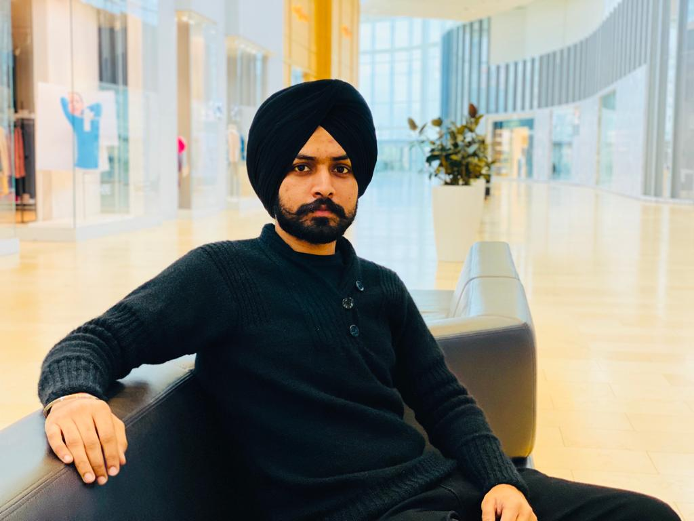

Inderjit Singh
Your most welcome in my personal website. This website contain all information about me. If you want to know about me then please visit all the link provided in the website.
My full name is Er.Inderjit Singh Brar. I have been living in Faridkot since my childhood. Now, I am living in Brampton, Canada. I come over here to persue my higher study. I am currently enrolled in Mobile Application Design and Develovement course in Lambton college, Toronto. I have comleted my graduation in the year of 2018. I want to be a successfull android programmer.